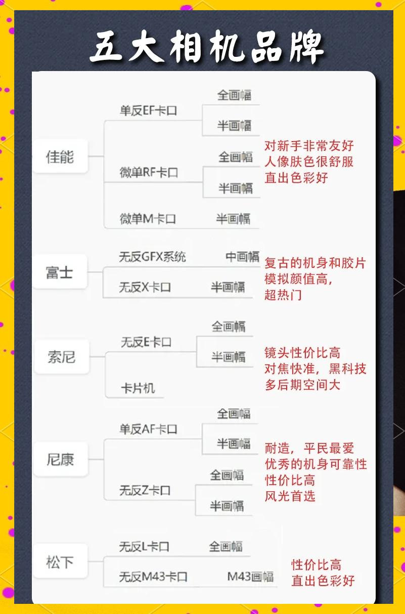

五大相机品牌优缺点对比

📸 摄影不仅是记录生活，更是一种艺术表达
选择一款合适的相机，就像选择一位理解你的伙伴
以下是五大相机品牌的优缺点对比，帮你找到最适合自己的相机：
索尼（Sony）
特色：技术创新，镜头传感器领先
代表作：索尼α系列
适用人群：追求影像质量和技术创新的摄影师
推荐理由：小巧轻便，影像清晰度高，适合旅行摄影和街拍
佳能（Canon）
特色：色彩还原自然，操作简便
代表作：EOS系列
适用人群：从摄影新手到专业人士
推荐理由：用户友好设计和出色的色彩管理系统，适合入门和提升
尼康（Nikon）
特色：擅长低光条件下拍摄，强大的自动对焦系统
代表作：D系列和Z系列
适用人群：适合在各种光线条件下工作的摄影师
推荐理由：追求完美拍摄效果，尤其在光线不理想条件下表现优异
富士（Fujifilm）
特色：独特的胶片模拟效果，复古外观设计
代表作：X系列和GFX系列
适用人群：追求独特风格和高品质图像的创意摄影师
推荐理由：色彩和设计独特，适合追求个性化和艺术氛围的摄影创作
松下（Panasonic）
特色：视频拍摄能力强，搭载了许多专业级视频功能
代表作：Lumix系列，尤其是GH系列
适用人群：专业视频拍摄者和需要高质量视频的摄影师
推荐理由：适合对摄影和摄像都有高要求的用户，既能捕捉生动照片，又能拍摄高质量视频
🔍 挑选相机的小贴士：
确定需求：考虑你最常进行的摄影类型，是风景、人像、运动还是视频？
预算规划：根据你的预算选择合适的机型，别忘了预留一部分预算用于购买镜头和配件
试摸实机：如果可能，到实体店试摸实机，亲自感受握持手感和操作
版权声明：内容均源于网络分享整理，如有侵权请及时联系删除。